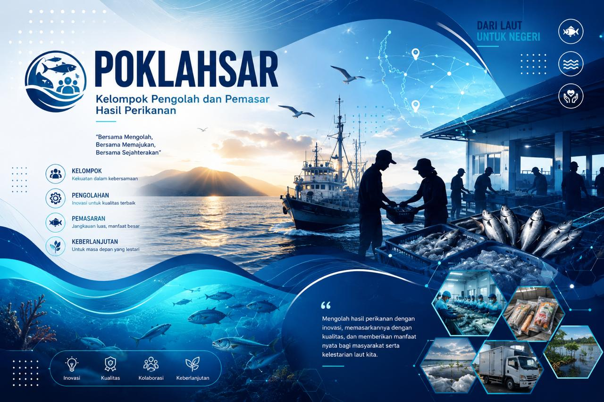

Selamat Datang di Sistem Informasi POKLAHSAR
POKLAHSAR (Kelompok Pengolah dan Pemasar Hasil Perikanan) merupakan kelompok masyarakat yang bergerak dalam kegiatan pengolahan dan pemasaran hasil perikanan untuk meningkatkan nilai tambah produk, memperluas pasar, dan meningkatkan kesejahteraan anggota kelompok.
Aplikasi ini digunakan untuk membantu pengelolaan administrasi kelompok, data anggota, keuangan, produksi, inventaris, pertemuan, pemasaran, serta penyusunan dokumen usaha secara digital sehingga lebih efektif, efisien, dan transparan.